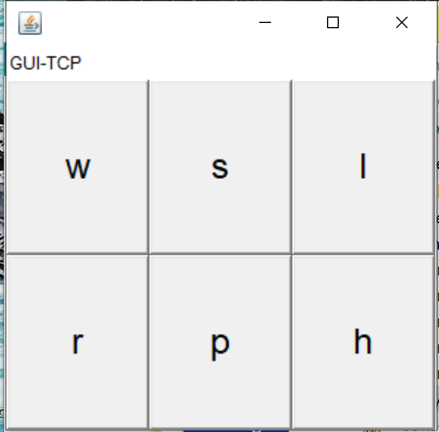
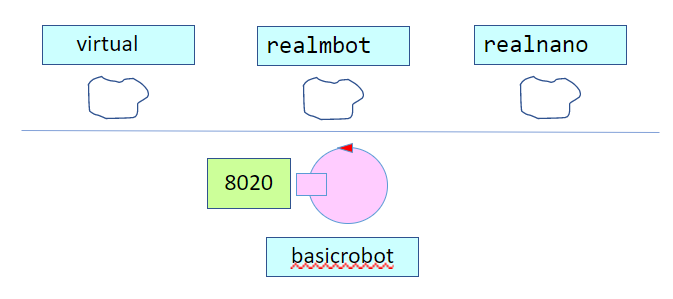
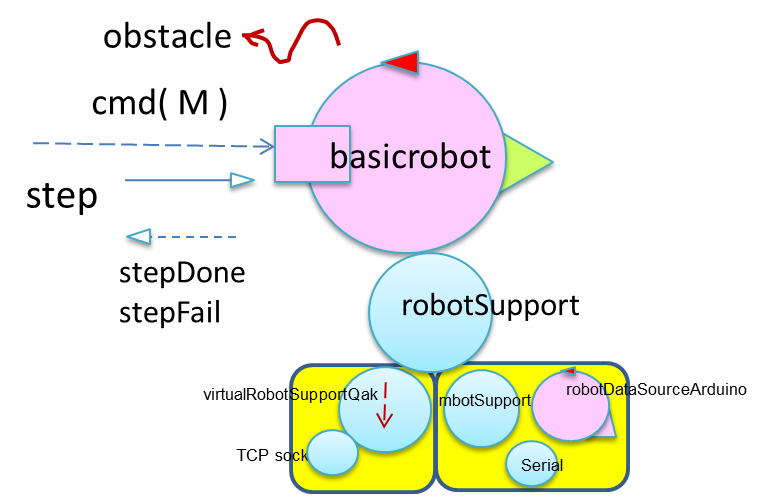

BasicRobot22¶
Obiettivo: introdurre un componente software che esegue comandi di spostamento di un DDR-robot in ‘modo indipendente dalla tecnologia’ con cui è realizzato del robot (virtuale o reale).
BasicRobot22: requisiti¶
Più specificatamente, BasicRobot22:
(requisito cmdbase) è in grado di eseguire comandi-base cmd di spostamento, con argomento MOVE = w | s | l | r | h
(requisito cmdstep) è in grado di rispondere alla richiesta di effettuare uno step in avanti per il tempo TIME specificato nell’argomento, fornendo una risposta che può essere:
stepdone se lo step è stato eseguito con successo
stepfail se lo step è fallito dopo il tempo DT (
DT<TIME) per una qualche ragione REASON.(requisito backstep) In questo caso,
BasicRobot22effettua uno spostamento all’indietro ‘di riposizionamenmto’ con durate (approssimativa) DT.
(requisito situated) è in grado di percepire e gestire informazioni provenienti dall’ambiente
(requisito observable) è in grado di rendere ossevabili informazioni sul suo stato funzionale corrente
(requisito tipidirobot) è in grado di utilizzare diversi tipi di robot (virtuali e reali) costruiti ciascuno con una propria tecnologia
(requisito cmdconsole) deve poter essere comandato da un utente umano attraverso una console di comando
BasicRobot22: analisi dei requisiti¶
Dopo il colloquio con il committente, si può precisare che:
requisito cmdconsole¶
Il committente si aspetta una console come quella di figura
requisito cmdstep¶
il simbolo p sulla console corrisponde al comando step
requisito backstep¶
il riposizionamenmto del robot dopo uno stepfail ha come obiettivo la possibilità che il robot possa costruire una mappa congruente dell’ambiente in cui si muove, come quella introdotta in Il robot come unità di misura
requisito tipidirobot¶
Il committente fa riferimento ad almeno tre diversi tipi di robot:
requisito situated¶
Le informazioni provenienti dall’ambiente in cui il BasicRobot22 è situato possono essere di varia natura,
al momento non del tutto precisata. Il caso ritenuto più probabile è che il robot debba poter reagire
ad allarmi generati da sensori on board (ad esempio sensori impatto, sonar, etc)
o sensori ambientali quali termometri, barometri, etc.
requisito observable¶
Le informazioni osservabili non sono al momento del tutto precisate. Tra le più probabili vi sono:
lo stato di esecuzione del robot, cioè l’azione che sta compiendo
il fatto che il robot, nel muoversi, ha incontrato un ostacolo
BasicRobot22: analisi del problema¶
core problem
Il cuore del problema consiste nel fare in modo che
BasicRobot22agisca come un esecutore osservabile di comandi, essendo al contempo capace di reagire ad allarmi.
BasicRobot22 si comporta essenzialmente in modo reattivo, in quanto opera sotto il controllo dell’utente,
ma mostra proattività nella esecuzione dei comandi, tra cui in particolare step.
Nel seguito si farà uso del linguaggio QAk per esprimere in modo formale l’architettura logica del sistema e per costruire un modello eseguibile (prototipo) con cui interagire con il committente, al fine di definire al meglio i requisiti.
progetto di lavoro: unibo.basicrobot22
Il modello viene costruito nel file basicrobotqak, nel orogetto unibo.basicrobot22.
BasicRobot22: interazione¶
L’interazione con il robot è definita, in termini di operazioni di message-passing, come segue
Il requisito cmdbase¶
Dispatch cmd : cmd(MOVE)
Sulla durata dei comandi-base
Per muovere un robot reale occorre inviare comendi ai motori. La esecuzione di uno step di durata
DTimplica l’invio di due comandi (w e h), intervallati daDT.Per muovere un VirtualRobot si inviano comandi che specificano già la durata del movimento. Al fine di usare il VirtualRobot in modo del tutto analogo a un robot reale, si definisce una durata adeguatamente ‘lunga’ del comando w (ad esempio
1000msec)
Il requisito cmdstep¶
Request step ( TIME )
Reply stepdone : stepdone(V)
Reply stepfail : stepfail(DT, REASON)
Il requisito situated¶
Al momento supponiamo che BasicRobot22 debba poter percepire e gestire informazioni provenienti da un sonar
installato a bordo:
Event sonar : sonar(DISTANCE,NAME)
Impostazione del modello¶
Si delinea una prima definizione formale del sistema nel file basicrobotqak:
System basicrobot
Dispatch cmd : cmd(MOVE)
Request step : step( TIME )
Reply stepdone : stepdone(V)
Reply stepfail : stepfail(DURATION, CAUSE)
Event sonar : sonar(DISTANCE,NAME)
Context ctxbasicrobot ip [host="localhost" port=8020]
QActor basicrobot context ctxbasicrobot{ ... }
Il requisito tipidirobot¶
L’uso di robot di tipo diverso può essere raggiunto introducendo un insieme di diversi supporti di basso livello e una fase di configurazione che seleziona il supporto appropriato per il tipo di robot specificato in un file di configurazione del robot.
Una prima architettura¶
Si delinea una architettura come quella raffiguata:
Il requisito cmdconsole¶
La console che permette la interazione tra un operatore umano e il BasicRobot22 è un sistema a sè stante che
potrebbe interagire con il robot con uno dei seguenti protocolli:
TCP
HTTP
CoAP
MQTT
Osserviamo che la Qak infrastructure supporta già interazioni via TCP, CoAP, MQTT.
Modello dell’analisi¶
WORKTODO: costruire un modello eseguibile del sistema
Per meglio interagire con il committente è opportuno definire un modello eseguibile del sistema che imposti le interazioni-base tra console e
BasicRobot22senza introdurre alcun robot virtuale o reale.
Modello sviluppato in Lab2¶
Tenendo conto della Impostazione del modello possiamo dire che:
il modello dell’architettura logica include due componenti: un attore
basicrobotche rappresenta ilBasicRobot22e un attoremockconsoleche simula la console.
System basicrobotanalisi
Dispatch cmd : cmd( MOVE )
Request step : step( TIME )
Reply stepdone : stepdone( V )
Reply stepfail : stepfail( DT, REASON )
Event sonar : sonar( DISTANCE, NAME )
Context ctxbasicrobot ip [host='localhost' port=8020]
Context ctxMockConsole ip [host='127.0.0.1' port=8033]
QActor basicrobot context ctxbasicrobot { ... }
QActor mockconsole context ctxbasicrobot { ... }
Modello del basicrobot¶
Il punto rilevante dell’analisi è che il BasicRobot22 esegue sempre con successo i comandi inviati con il
Dispatch cmd, mentre può dare risposte diverse a un comando inivato con la Request step.
QActor basicrobot context ctxbasicrobot {
State s0 initial{
}
Transition t0 whenMsg cmd -> handleCmd
whenRequest step -> handleStep
State handleCmd {
onMsg( cmd:cmd(ARG) ){
println("handleCmd SIMULO IL COMANDO cmd(${payloadArg(0)})")
}
}
State handleStep {
println("handleStep Simulo comportamento step andato a buon fine")
replyTo step with stepdone : stepdone(OK)
//println("Simulo comportamento step andato male")
//...
}
}
Modello della console¶
Introduco un mock actor che simula la console, invio una request step al basicrobot e verifico di ricevere come
risposta stepdone
WORKTODO: impostare un TestPlan automatizzato sia per cmd sia per step
Suggerimento: gli attori QAk sono risorse CoAP-osservabili che possono emettere informazioni sulle azioni che stanno compiendo e sul proprio stato.
BasicRobot22: Progetto¶
Progetto unibo.basicrobot22
La fase di progettazione parte dal modello dell’analisi e lo raffina introducendo il codice necessario al soddisfacimento dei requisiti che l’analisi ha omesso. Per parti di basso livello definite in Kotlin, può essere utile consultare kotlinUnibo.
Anche in questa fase però miriamo a definire nel modello gli aspetti essenziali della ‘business logic’ del robot, lasciando ai supporti il compito di occuparsi dei dettagli tecnologici relativi ai diversi tipi di robot.
BasicRobot22: configurazione¶
La utility class unibo.robot.robotSupport.kt si occupa dei dettagli tecnologici specifici di ogni
tipo di robot utilizzando un supporto diverso per ciascun tipo.
BasicRobot22: supporti¶

|
per il VirtualRobot: virtualrobotSupport |

|
per il NanoRObot. nanoSupport, motors |

|
per il NanoRObot. mbotSupport |
File di configurazione¶
Il file di configurazione è impostato su frasi JSon, come ad esempio il seguente
basicrobotConfig.json:
{"type":"virtual","port":"8090","ipvirtualrobot":"..."}
{"type":"realnano","port":"8020","ipvirtualrobot":"dontcare"}
//Arduino connesso al Raspberry:
{"type":"realmbot", "port":"/dev/ttyUSB0", "ipvirtualrobot":"-"}
//Arduino connesso al PC:
{"type":"realmbot","port":"COM6","ipvirtualrobot":"dontcare"}
Con riferimento a Una prima architettura possiamo estendere il modello come segue:
System basicrobot
....
Context ctxbasicrobot ip [host="localhost" port=8020]
QActor basicrobot context ctxbasicrobot{
State s0 initial {
discardMsg Off //WE want receive any msg
qrun unibo.robot.robotSupport.create(myself,"basicrobotConfig.json")
[# RobotType = unibo.robot.robotSupport.robotKind #]
if[# RobotType != "virtual" #]{
[# var robotsonar = context!!.hasActor("realsonar")
unibo.robot.robotSupport.createSonarPipe(myself)
#]
}//The Virtual robot sonar is created in virtualrobotSupport2021
}
}
L’operazione qrun invoca il metodo static create della utility class unibo.robot.robotSupport.kt
che consulta il File di configurazione creando il supporto per il tipo di robot specificato.
pipe per un Sonar¶
Sfruttiamo la feature Actors as streams per generare eventi ‘di ambiente’ (come i dati di Sonar)
che possono essere percepiti e gestiti dal BasicRobot22.

{kind=link}
{kind=link}
{kind=link}
Il modello si raffina ultriormente:
System basicrobot
....
Context ctxbasicrobot ip [host="localhost" port=8020]
QActor basicrobot context ctxbasicrobot{ ... }
CodedQActor datacleaner context ctxbasicrobot className "rx.dataCleaner"
CodedQActor distancefilter context ctxbasicrobot className "rx.distanceFilter"
QActor envsonarhandler context ctxbasicrobot{ ... }
il requisito observable¶
Il modello QAk costituisce una risorsa CoAP-osservabile.
Le informazioni sullo stato funzionale corrente sono definite in una variabile RObState che può assumere
valori quali:
basicrobot(start), when the basicrobot is activated.
moveactivated(M), when the basicrobot has activated a non-step move M.
step(ST), when the basicrobot has activated a step with time ST.
stepDone(ST), when the basicrobot has terminated with success a step with time ST.
stepFail(D), when the basicrobot has failed a step after time D<ST.
obstacle(M), when the basicrobot hits an obstacle while executing the move M.
basicrobot(end), when the basicrobot terminates.
La console di comando¶
La console consoleGuiSimple può connettersi al BasicRobot22 usando uno dei seguenti protocolli,
secondo quanto definito nel file connQak.sysConnKb.kt
TCP
HTTP
CoAP
MQTT
Il pulsante p invia una richiesta di step con TIME=350.
La console invia i comandi mediante dispatch
Sono anche disponibili file Jupyter, nella directory resources/jupiter.
Esperimenti di uso¶
Attivare
BasicRobot22eseguendoit.unibo.ctxbasicrobot.MainCtxbasicrobot.ktAtiivare una console eseguendo
consoles.consoleGuiSimple.ktAttivare un CoapObserver eseguendo
basicrobotCoapObserverAttivare una ulteriore console con protocollo CoAP
Per provocare interazioni usando MQTT, occorre
(in basicrobotqak) togliere il commento
mqttBroker "broker.hivemq.com" : 1883 eventTopic "unibo/basicrobot"Attivare una console con protocollo MQTT oppure
qakbasicrobotcallerMQTT.ipynbinit.unibo.issLabStart/resources/jupyter/
Distribuzione¶
BasicRobot22: Dockerfile¶
FROM openjdk:12.0.2
EXPOSE 8020
## ADD extracts the tar
ADD ./build/distributions/it.unibo.basicrobot-1.0.tar /
WORKDIR /it.unibo.basicrobot-1.0/bin
COPY ./*.pl ./
COPY ./*.json ./
## docker build -t basicrobot22:1.0 .
## docker run -it --rm --name basicrobot22 -p8020:8020/tcp --privileged basicrobot22 /bin/bash
Tagging and register on Dockerhub¶
docker tag basicrobot22:1.0 natbodocker/basicrobot22:1.0
//Logging on Dockerhub
type docker_password.txt | docker login --username natbodocker --password-stdin
//Register
docker push natbodocker/basicrobot22:1.0
basicrobot22.yaml¶
version: '3'
services:
wenv:
#image: docker.io/natbodocker/virtualrobotdisi:4.0
image: virtualrobotdisi:4.0
ports:
- 8090:8090
- 8091:8091
robot:
##image: docker.io/natbodocker/basicrobot21:1.0
image: basicrobot22
ports:
- 8020:8020/tcp
- 8020:8020/udp
depends_on:
- wenv
## -------------------------------------------------------------
## TODO See https://docs.docker.com/compose/startup-order/
## -------------------------------------------------------------
## docker-compose -f basicrobot22.yaml up
## docker-compose -f basicrobot22.yaml run --service-ports wenv
Revisione del file di configurazione¶
La costruzione all’interno della macchina virtuale di un VirtualRobot come servizio
da cui dipende BasicRobot22 richiede una
Modifica alla specifiche di configurazione
L’indirizzo ip deve assumere ora il nome del servizio (wenv):
{"type":"virtual", "port":"8090", "ipvirtualrobot":"wenv"}